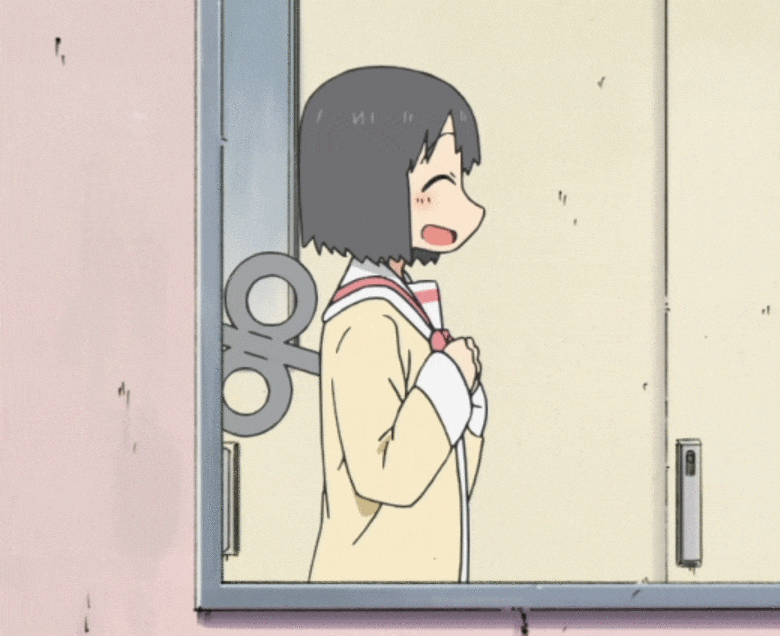

Nano Nano Nano !!

So, there's this cosplay event in the city I'm in, and I had the idea to make Nano Shinonome's spinning key from nichijou! Which I thought would be a pretty ez simple project, yaknow a motor and pipe and stuff!
It took me MONTHS (plus procrastinating, urhm)
